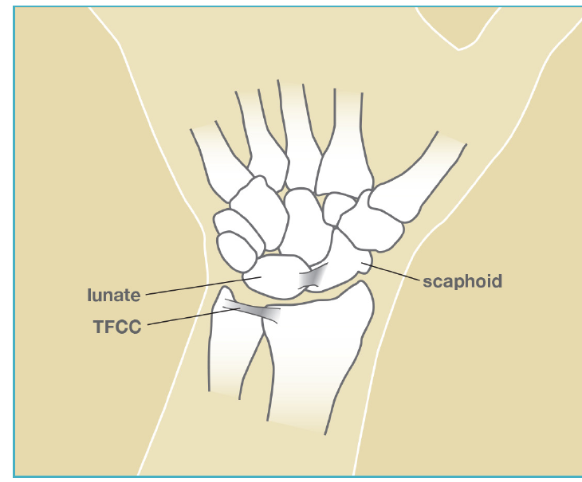

Afección
Desgarro del TFCC
Un desgarro del pequeño cojín de cartílago y ligamento en el lado del meñique de la muñeca. Una causa común de dolor en el lado cubital de la muñeca.

Illustration © American Society for Surgery of the Hand
¿Qué es un desgarro del TFCC?
El complejo del fibrocartílago triangular (TFCC) es un pequeño disco de cartílago y ligamentos en el lado del meñique (cubital) de la muñeca. Actúa como un cojín entre los huesos del antebrazo y los huesos de la muñeca, y ayuda a mantener estables los dos huesos del antebrazo cuando se gira la mano. Un desgarro del TFCC es una interrupción de este cojín, por una lesión repentina o por desgaste gradual.
Síntomas comunes
- Dolor en el lado del meñique de la muñeca
- Dolor que empeora al girar el antebrazo (girar una llave, abrir una perilla de puerta) o al apoyarse en la muñeca
- Una sensación de clic, atascamiento o chasquido
- Sensación de que la muñeca está débil o inestable
- Hinchazón o dolor después de la actividad
¿Por qué ocurre?
Los desgarros del TFCC ocurren de dos maneras. Un desgarro traumático es causado por una lesión específica, más a menudo una caída sobre la mano extendida o un giro fuerte de la muñeca. Un desgarro degenerativo ocurre lentamente con la edad, y es más común en personas cuyo hueso cúbito es ligeramente más largo que su radio (una variante normal llamada varianza cubital positiva). Las actividades que cargan la muñeca mientras gira, como los deportes de raqueta y la gimnasia, pueden sacar los síntomas.
Opciones de tratamiento
Tratamiento no quirúrgico
- Férula para muñeca. Una férula o soporte para la muñeca durante varias semanas puede calmar el desgarro y a menudo resuelve los síntomas, especialmente para los desgarros degenerativos.
- Modificación de actividades. Evitar temporalmente los movimientos que causan dolor (agarrar mientras se gira) ayuda a calmar el desgarro.
- Inyección de esteroides. Una inyección de cortisona en el TFCC puede reducir la inflamación y el dolor.
- Terapia. La terapia de mano para fortalecer los estabilizadores de la muñeca es útil una vez controlado el dolor.
Tratamiento quirúrgico
- Desbridamiento o reparación artroscópica. Si el tratamiento conservador no funciona, se usa una pequeña cámara para mirar dentro de la muñeca y recortar un borde deshilachado o coser los bordes rotos. Cuál es mejor depende de dónde esté el desgarro y cuánto del TFCC esté afectado.
- Osteotomía de acortamiento cubital. En pacientes con varianza cubital positiva cuyo TFCC está fallando por sobrecarga, acortar el hueso cúbito alivia la presión del TFCC y a menudo funciona bien.
Qué esperar en su cita
El Dr. Barrera examinará la muñeca y realizará pruebas específicas que presionan el TFCC para reproducir el dolor. Las radiografías revisan la alineación de los huesos del antebrazo y la longitud relativa del cúbito. Si el diagnóstico no está claro o si los síntomas no responden al tratamiento inicial, una resonancia magnética es la mejor prueba para ver el TFCC directamente.
Llámenos si una lesión en la muñeca va seguida de hinchazón severa, pérdida de movimiento o una muñeca visiblemente deformada. La pérdida repentina de fuerza de agarre o entumecimiento en la mano también merece evaluación rápida.
¿Preguntas?
Llame a su consultorio para preguntas no urgentes:
- NYU Langone Laurelton · 646-501-4950
- NYU Orthopedic, Woodside · 929-429-3222
- NYU Orthopedic, Richmond Hill · 718-206-6923
- Jamaica Hospital Ambulatory Care Center (ACC) · 718-301-0720
Consulte la información de nuestras oficinas para direcciones y números de fax.